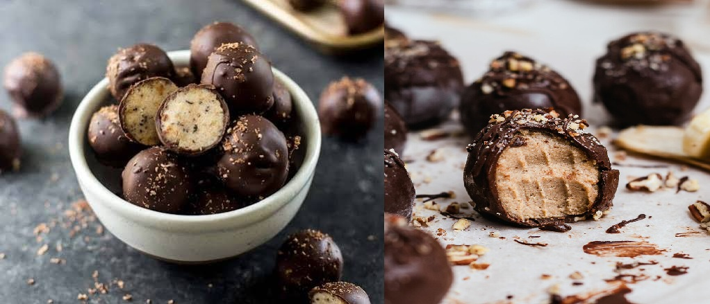

Trufas de Plátano y Chocolate

Ingredientes
- 2 plátanos (bananas)
- 200g de chocolate negro
Pasos
- Pela los plátanos, colócalos en un plato y tritúralos bien con un tenedor hasta lograr un puré liso.
- Derrite el chocolate negro en el microondas (en tandas de 30 segundos para que no se queme) o a baño María.
- Mezcla el puré de plátano con el chocolate derretido hasta que quede una masa homogénea.
- Vierte la mezcla en un molde o ve haciendo bolitas y llévala a la heladera por un mínimo de 2 horas hasta que tome consistencia sólida. ¡Corta en cubos o disfruta tus trufas!
Bastoncitos de Queso Crujientes

Ingredientes
- 1 lámina de masa de hojaldre rectangular
- 150g de tu queso rallado
Pasos
- Estira la masa de hojaldre sobre una mesada.
- Espolvorea todo el queso rallado de forma uniforme sobre la mitad de la masa. Dobla la otra mitad de la masa por encima (como si cerraras un libro) para cubrir el queso.
- Pasa un rodillo o palote suavemente por encima para que el queso se pegue bien. Corta tiras delgadas de un centímetro de ancho con un cuchillo.
- Tuerce cada tira sobre sí misma para darle forma de espiral, colócalas en una bandeja para horno y cocínalas a 200°C durante 10-12 minutos hasta que estén doradas y crujientes.
Mousse de Limón Express

Ingredientes
- 1 lata de leche condensada
- 200g de crema de leche
- jugo de 3 limones grandes.
Pasos
- En un recipiente grande, vuelca la leche condensada y la crema de leche. Mezcla bien con un batidor de mano.
- Agrega el jugo de limón poco a poco mientras sigues batiendo suavemente. Notarás que la mezcla empieza a espesarse mágicamente por el ácido del limón.
- Sirve la crema en vasos individuales y déjalos enfriar en la heladera por lo menos 1 hora antes de comer. Puedes decorar con un poco de ralladura de limón por encima.